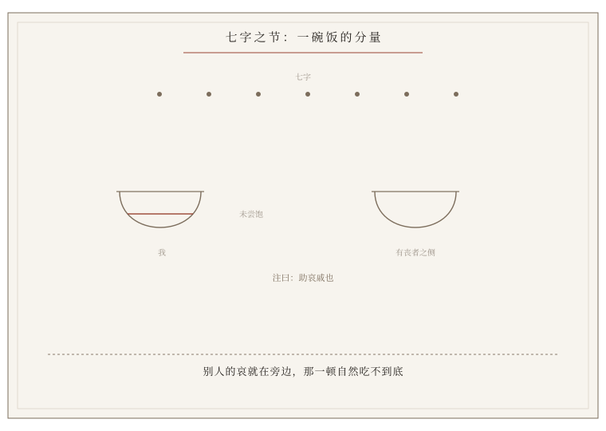

檀弓上 · 三·七十二 · 第 275 课
食於有喪者之側，未嘗飽也。
说什么事：在有丧事的人旁边吃饭，从没有吃饱过。
落在哪一层：礼意，落在最细的一处——一餐饭的分量。
为何编在此位：上节论服制之引推，此节忽然落到一餐饭。由制入情，是全篇的呼吸口。此下三节皆论待人之丧，此节为其最简者。
【经】食於有喪者之側，未嘗飽也。
【注】助哀戚也。
【疏】底本此节无疏文。《檀弓》此句与《论语·述而》「子食于有丧者之侧，未尝饱也」同文，注家多以为记孔子之事而记者述之。
食 吃饭。此处是动词，非名词。
侧 旁边。不曰「与有丧者同食」，而曰「于其侧」——即在丧家之侧。
未尝 从来没有。「未尝」二字，比「不」重；是一次一次累积出来的记录。
饱 吃饱。饱是分量的尽头。
在有丧事的人旁边吃饭，从来没有吃饱过。
此节只七字，是《檀弓》全篇最短的一节，也是最不必解释的一节。
注只四字：「助哀戚也」——帮着哀。不是礼节上要表示什么，是别人的哀就在旁边，自己那一餐自然吃不到底。
疏家于此无疏，因为无可疏。这一句的意思全在「未尝」二字上：不是某一次不吃饱，是每一次都吃不饱；也不是忍住不吃，是吃不下。
第一层 「侧」字的位置感 不是「与丧者共食」，是「食于其侧」。这个「侧」写的是空间，也写的是心的位置：我在旁边，不在对面。对面是宾主，旁边是同处。同处的人，饭量会跟着变。
第二层 「未尝饱」不是节制 若是节制，就是「我能吃而不吃」，是一种自我要求，可以夸口。此节说的是「未尝饱」——吃不饱，身体先应了。礼在这里不是加在人身上的规矩，是从人身上长出来的反应。
第三层 与《论语》同文 此句又见于《论语·述而》，与「子于是日哭，则不歌」相连。同一句话落在两部书里，一部记孔门言行，一部记礼制仪节——说明这句话在当时是被当作「礼」来看的，不只是某一个人的私德。一个人吃不饱是修养，所有人于丧者之侧都吃不饱，才是礼。
第四层 最简处见全篇之眼 《檀弓》全篇论丧，多的是制度、变礼、争辩、讥评。此节一句白描，把前面那些繁密全收到了一个碗里：礼到最后，就是别人有丧时你吃不下饭。若此处不成立，前面一切制度都是空文。
与今日何干 今人赴丧，多讲究「到场」「随礼」「不失仪」。此节不问这些，只问一件极小的事：那一顿饭，你吃饱了吗。它给了一个不必说出口的检验法——身体的反应，比任何言辞都诚实。
| 左 | 右 |
|---|---|
| 食于有丧者之侧 | 在其旁，非在其对面 |
| 未尝饱 | 每一次皆然 |
| 助哀戚也 | 注四字尽之 |
| 非不食 | 是不饱 |
| 非节制 | 是应 |
| 《檀弓》七字 | 全篇最短 |
| 《论语》同文 | 一人之德即通礼 |
| 身体先应 | 礼从人身上长成 |
画一间简朴的堂屋，视点平。屋内一张矮案，案上摆着两只陶碗、一碟菜蔬，碗里的饭只动了少许。案的一侧坐着一位老者（深衣、正面偏侧、双手置于膝上，面前那碗饭几乎未动；不画人面细节），另一侧稍远处，一位素衣者低首而坐，面前空无一物。堂外传来一缕白幡的一角（只画一角，不画全幡）。不写文字。赭色只用在两只陶碗的碗沿。
